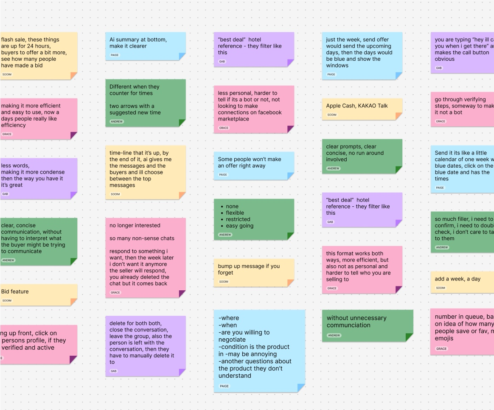
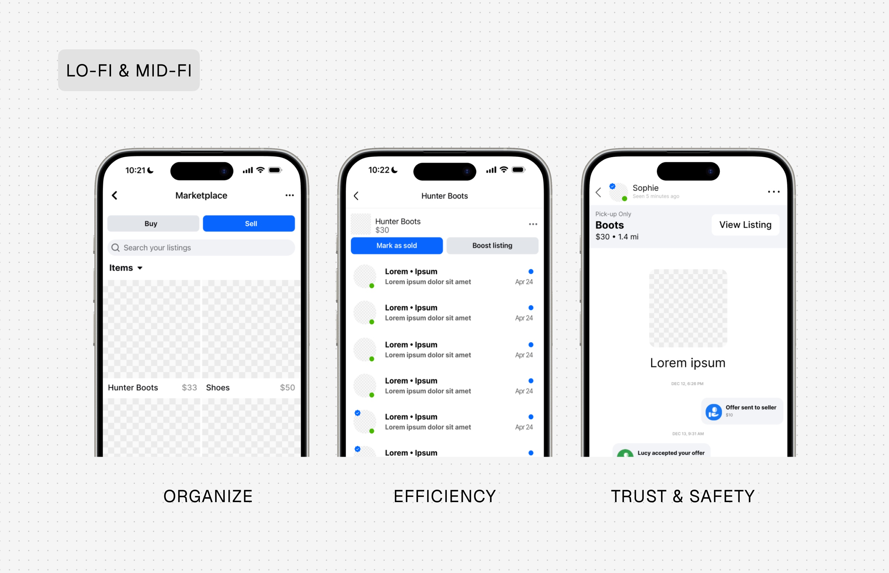
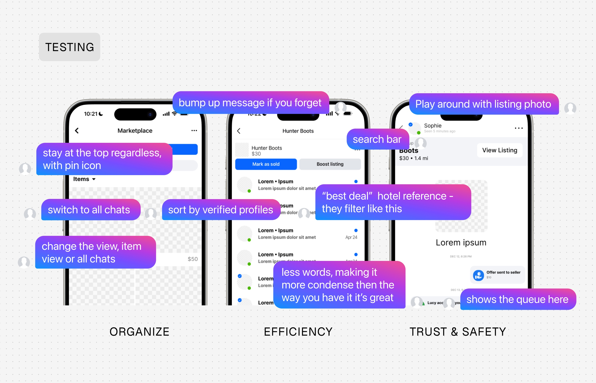
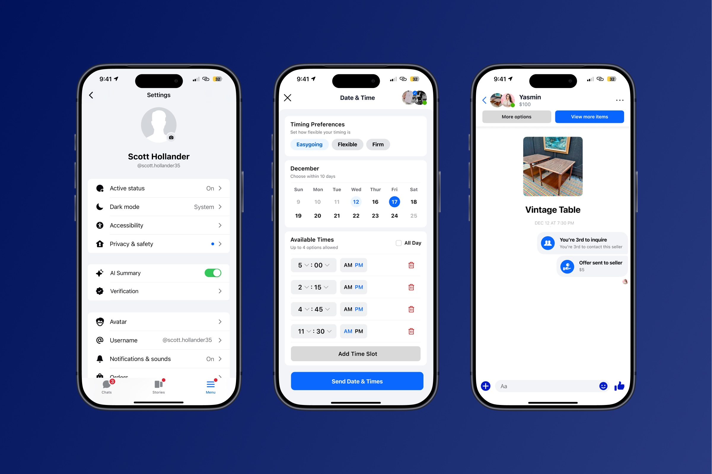
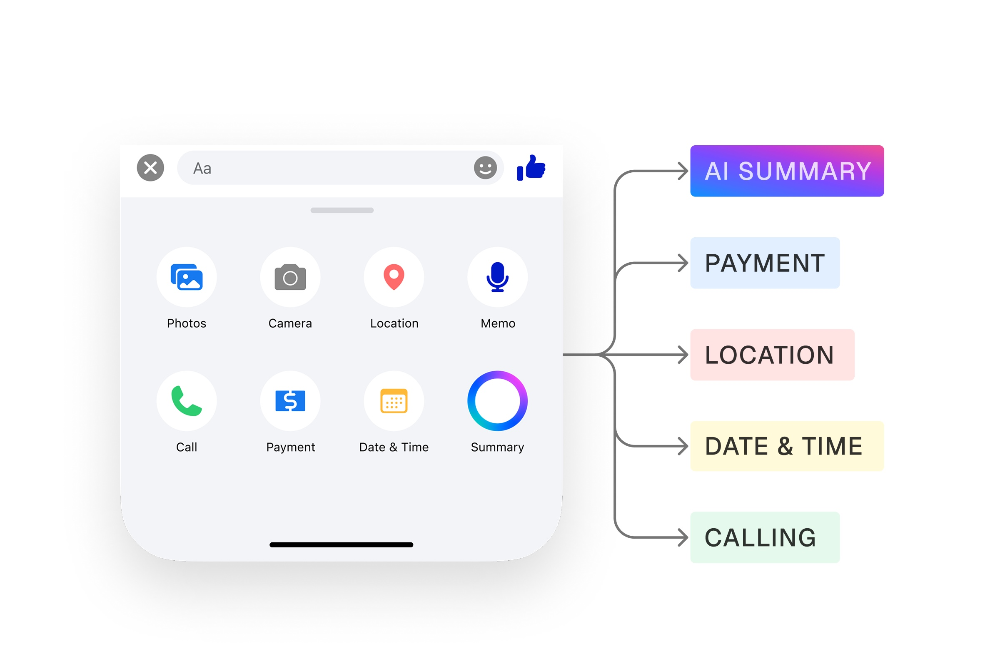
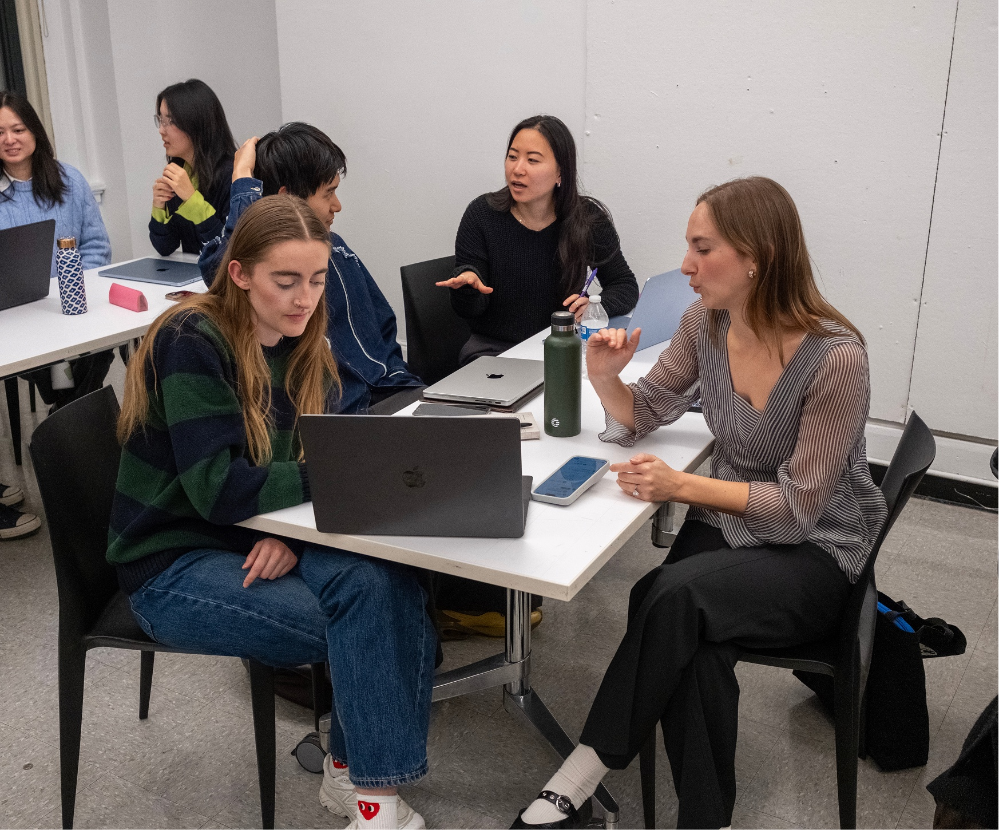

Facebook Marketplace • Chat • 2025
Redesigning Marketplace Chat for Faster, Clearer Transactions
Overview
From Open Chat to Structured Transactions
This project redesigns the transaction layer of Facebook Marketplace by turning fragmented Messenger threads into structured transaction flows. Built for high-volume buyers and sellers, it addresses how intent and next steps get lost across parallel conversations. AI summaries, buyer prioritization, scheduling, and payments work as a single system to guide decisions. The result is faster deal completion with fewer dropped conversations.This was a solo project completed at The New School, covering the full design process from research through final prototype.
The Problem
Conversations Break Down at Scale
High-volume listings generate dozens of parallel conversations with no way to identify serious buyers or track deal progress. Sellers manually sort messages and repeat information, while buyers cannot tell if an item is available or when they will get a response. As threads grow, key details get buried and coordination breaks down. This leads to missed messages, off-platform workarounds, and incomplete transactions.

Research Insights
Intent Exists, But It’s Buried in Chat
I conducted user interviews with 6 participants, supplementary secondary research, and usability testing with 7 additional people including graduates and current classmates all with active buying and selling experience on Facebook Marketplace.
Three patterns shaped the direction:

Defining the Opportunity
Make Intent and Next Steps Visible
The opportunity was to shift Marketplace conversations from open-ended chat to structured transaction flows that surface intent, status, and next steps. I focused on embedding this directly in the conversation rather than adding external tools. Features like bidding and expanded marketplace systems were intentionally excluded to stay within scope and avoid increasing complexity. The system reframes chat as a coordination layer that drives transactions forward.

Design Exploration
Designing for Action, Not Conversation
I explored divergent concepts early including manual sorting, tagging, and a bidding system before narrowing to the core user pain points. Directions that felt too far from actual friction were cut: features that addressed surface level UI issues without solving coordination, and options that added steps without moving a transaction forward.
The design evolved toward automated prioritization and structured actions inside the thread, reducing the need to scan long message histories to find key details. This required balancing automation with control so users could still manage conversations without losing flexibility.
Test & Iterate
What Helped Users Act Faster
When full conversation flows were tested, users identified serious buyers faster when offers and pickup times were surfaced instead of buried in chat. I prioritized extracting these signals into structured actions. This reduced missed messages and improved decision speed.
When features were explored in isolation, users did not understand how to use them within the transaction flow. I removed disconnected features and focused on integrated actions inside the conversation. This improved clarity and reduced drop-off between steps.
When too many actions were introduced, users hesitated and defaulted back to typing messages. I reduced options to key actions like scheduling and payment. This increased follow-through and kept transactions moving forward.


Final Product
A Transaction Flow Inside the Conversation
The final system turns each conversation into a structured transaction flow by extracting key signals such as price offers and proposed pickup times from messages. Buyers are prioritized based on these behaviors, allowing sellers to focus on the most actionable conversations instead of scanning entire threads.
Users can move from interest to scheduling to payment directly within the conversation. Payment uses a handoff code model where the buyer sends funds, which are held until the in person exchange. At meetup, the buyer shares a 4 digit verification code that the seller enters to release the funds. Neither party discloses financial information, and the entire flow stays within the Facebook app. The pattern deliberately mirrors familiar authentication experiences like Uber ride confirmation and iOS AirDrop, so users can trust the process without learning something new.

Impact
Less Chatter, More Completed Transactions
Qualitative feedback from testing and critique confirmed that the payment system resolved a trust problem that earlier iterations left unsolved. Reviewers noted that the handoff code approach was a meaningful improvement where users felt safe completing payment without exposing financial information, while staying entirely within the platform. Sellers no longer need to scroll through long threads to find key details. Buyers can respond to structured options instead of repeating messages to coordinate logistics, keeping conversations moving from initial interest to confirmed transaction.

Reflection
Designing Systems, Not Features
I initially explored adding more features such as bidding, but learned that increasing options made it harder for users to act. The key shift was focusing on reducing cognitive load by structuring decisions within the conversation itself.
This project clarified that the challenge is not messaging, but how critical information like offers and scheduling is surfaced at the right time. Next, I would test how this system performs under high-volume conditions and edge cases like low-intent buyers or spam.


Presentation